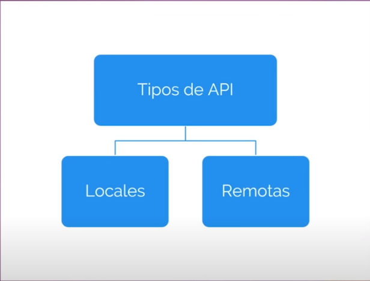

El modelo cliente-servidor es una arquitectura de red que divide las funciones de un sistema informático en dos partes principales: el cliente y el servidor. Estas partes interactúan entre sí para proporcionar servicios o recursos a los usuarios.
1. Cliente: - El cliente es la parte del sistema que solicita servicios o recursos al servidor. - Puede ser un software, hardware o incluso un usuario que utiliza una interfaz para acceder a los servicios.
2. Servidor: - El servidor es la parte del sistema que proporciona servicios o recursos solicitados por los clientes. - Está diseñado para escuchar las solicitudes entrantes, procesarlas y enviar las respuestas adecuadas.
3. Comunicación: - La comunicación entre el cliente y el servidor se realiza a través de un protocolo específico (por ejemplo, HTTP para la web). - El cliente envía solicitudes al servidor, y este responde con la información o servicio solicitado.
4. Descentralización: - Este modelo permite la descentralización de servicios, ya que los clientes pueden acceder a recursos compartidos en servidores remotos. - Los servidores pueden especializarse en tareas específicas, y los clientes pueden utilizar varios servicios sin necesidad de tener toda la funcionalidad localmente.
5. Escalabilidad: - El modelo cliente-servidor es escalable, ya que puedes agregar más clientes y servidores según las necesidades de la aplicación o sistema.
6. Ejemplos de aplicaciones: - El modelo cliente-servidor se utiliza en una amplia variedad de aplicaciones, como aplicaciones web, servicios en la nube, bases de datos distribuidas, juegos en línea y sistemas de correo electrónico.
En resumen, el modelo cliente-servidor es una estructura de comunicación que organiza la interacción entre los usuarios (clientes) y los recursos o servicios proporcionados (servidores) de manera eficiente y descentralizada. Este enfoque ha demostrado ser fundamental en el diseño de sistemas distribuidos y aplicaciones en red.
Patrón Modelo-Vista-Controlador (MVC)
El patrón Modelo-Vista-Controlador (MVC) es una arquitectura o patron de diseño de software. Este patrón divide la aplicación en tres componentes principales: Modelo, Vista y Controlador, con el objetivo de separar las responsabilidades y mejorar la modularidad.
Este modelo tambien se suele conocer como el módelo de 3 capas.
Por un lado la (UI) el frontend lo que en desarrollo web, construimos con HTML, CSS Y JAVASCRIPT
Luego tenemos el backend y ahí es donde justamente, hasta antes de nodeJs si queriamos hacer ana aplicación web, pues en el front siempre vamos a tener HTML, CSS y JS con las herramientas que están al rededor del sistema frontend, pero en el backend tambien ya dependia mucho de con que lenguaje de programación ibamos a trabajar y que tipo de servidor ibamos a tener, entonces pues en el backend tenemos una mayor variedad de opciones, porque yo podria desarrollar un mismo tipo de aplicación en tecnologías de lenguaje JAVA, .NET, C#, C++, ASP.NET, Phyton, PHP.
Pues justamente hasta antes de NodeJs JAVASCRIPT solo existia en los navegadores, es curioso saber que ni JAVASCRIPT ni PHP nacieron como lenguajes de programación si no más bien como herramientas que le permitieran a los programadores de generar código HTML para la web de manera más dinámica, pero obviamente que con la popularidad que tuvieron ambas tecnologías posteriormente se pensó en hacerlo en un lenguaje formal.
Entonces desde del 2009 gracias a la creación de NodejS creado por Ryan Lienhart Dahl, pues podemos utilizar en el frontend JS y en el backend tambien, y la tercera capa sería justamente la capa del modelo de datos, es decir donde almacenaremos la información.
Otra de las cosas que tambien popularizo nodeJs y tambien gracias a la big-data, los desarrolladores empezamos a tener la necesidad de almacenar la información no simplemente en módelos relacionales a base de tablas y columnas, porque digamos que de un registro a otro la información podria cambiar, entonces fue por eso que nacieron las corrientes de bases de datos NoSql.
En las bases de datos no relacionales NoSql tambien tenemos diferentes tipos de bases de datos, las que son de tipo "clave" - "valor" y otras que son documentales porque guardan en documentos la información y pues resulta que la estructura de un documento es como si fuera un objeto JS.
Esto significa que con bases de datos documentales como bien podria ser FIREBASE o MONGODB, tambien podriamos tener la misma sintaxis de JS en el lado del servidor.
Este concepto se le conoce como programación ISOMORFICA que viene de "ISO" = "IGUAL", "MORFOS" = "FORMA", es decir la misma forma y en este caso hoy en día el unico lenguaje de programación en el que podemos hacer una aplicación en sus 3 grandes capas (frontend, backend, modelo de datos) es JAVASCRIPT.
En otros lenguajes como por ejemplo si queremos construir una aplicación en tecnologías .NET, pues en el backend tendremos .net pero en la base de datos seguramente utilizaremos SQL-Server.
1. Modelo: - El Modelo representa la lógica y los datos de la aplicación. - Gestiona el acceso a los datos y contiene la lógica de negocio.
2. Vista (UI): - La Vista se encarga de la presentación de la información al usuario. - Muestra los datos del Modelo y recibe la entrada del usuario.
3. Controlador: - El Controlador actúa como intermediario entre el Modelo y la Vista. - Maneja la entrada del usuario, actualiza el Modelo y actualiza la Vista.
Ventajas del patrón MVC:
Facilita la modularidad y el mantenimiento del código.
Permite cambios en la interfaz de usuario sin afectar la lógica subyacente.
Mejora la reutilización del código.
Ejemplo de implementación en un entorno web:
Ruta del Modelo: Contiene la lógica de acceso a la base de datos y las operaciones relacionadas con los datos.
Ruta de la Vista: Incluye los archivos de plantilla que definen la presentación y la interfaz de usuario.
Ruta del Controlador: Gestiona las solicitudes del usuario, interactúa con el Modelo y actualiza la Vista.
En resumen, el patrón Modelo-Vista-Controlador (MVC) proporciona una estructura organizada para el desarrollo de software, mejorando la mantenibilidad y permitiendo la separación de responsabilidades entre los componentes de la aplicación.
¿Qué es una Api?
API (Interfaz de Programación de Aplicaciones):
Una API, por sus siglas en inglés, es una Interfaz de Programación de Aplicaciones. Es un conjunto de reglas y definiciones que permite a diferentes software comunicarse entre sí. Una API define cómo interactuar con un software o un conjunto de servicios, permitiendo que aplicaciones externas accedan y utilicen sus funciones y datos de manera controlada.
Cuando se habla de una "interfaz de programación de aplicaciones (API)," se hace referencia a un conjunto de reglas y definiciones que permiten la comunicación entre diferentes software. Una API no tiene que ser necesariamente visual; es más bien un conjunto de métodos, reglas y protocolos que permiten que las aplicaciones se comuniquen entre sí de manera programática. Las APIs definen cómo se deben realizar ciertas operaciones y cómo se deben estructurar los datos para interactuar con un servicio o aplicación.
Para entender mas el concepto de una Api supongamos que queremos hacer una aplicación como la de Uber y para eso necesitamos mapas (geolocalización) y para eso necesitariamos una tonelada de billetes para poder desarrollar los mapas desde cero, así que lo mejor es conectarnos a google maps y utilizar los mapas de ellos ya que ellos han gastado muchisimo dinero, en imagenes satelitales, aviones, helicopteros, carros sin conductor, gente con camaras en la cabeza, es enorme todo lo que ellos han hecho.
Nosotros ya podemos utilizar todo ese desarrollo que otros han hecho como google maps.
Otro ejemplo si queremos hacer un e-commerce para vender en internet, entonces imaginemonos desarrollar toda la tecnología para desarrollar el sistema de pagos desde cero para poder cobrar por internet, pues si que sería algo complicado, pues mejor nos conectamos a una pasarela de pago, tipo paypal ,stripe y ya estaría, entonces aprovechamos el desarrollo que han hecho otras empresas para nuestra aplicación y ese es el concepto de Apis a grandes rasgos.
Ahora veamos los conceptos más claros.
Terminología
Interfaz
Como ya vimos una interfaz es una capa de abstracción para que 2 sistemas se comuniquen, una capa de abstracción nos permite a nosotros interactuar con un sistema sin necesidad de saber que está pasando por detrás, por ejemplo la imagén de voltante de un auto.
Nosotros podemos girar el volante y el auto sigue esa dirección, nosotros no necesitamos saber que está pasando por detrás para que eso pase, eso es un ejemplo de interacción con una capa de abstracción.
Otro ejemplo un formulario de login, nosotros ponemos nuestro usuario y contraseña, hacemos clic en iniciar sesión y accedemos, pero no necesitamos saber que fue lo que pasó por detrás, eso es una interfaz.
Api
Una Api es una interfaz pero es (Application Programming Interface), pero es una interfaz para que se comuniquen aplicaciones o programas de software y compartan datos entre ellos.
Arquitectura de software
Es la forma en que esta diseñado un sistema, como estan organizados sus componentes, como se comunican entre ellos y que funciones cumplen.
Servicio Web
Es un sistema que permite la comunicación entre equipos que esten en una misma red, estos sistemas tienen que seguir ciertos estándares como usar el protocolo HTTP que es el mismo protocolo para navegar en la web y es la base de las Apis remotas, de la comunicación entre programas pero que esten en lugares diferentes.
Rest
Es una arquitectura, las Apis pueden ser de varios tipos y una de estos tipos son las Apis Rest, la arquitectura rest, significa (RESPRESENTATIONAL STATE TRANSFER), que en español significa una REPRESENTACIÓN DE TRANSFERENCIA DE ESTADO, esta arquitectura implica que puedan guardarse los datos en cache, también que el estado no se envía en las peticiones y que nosotros podemos definir que datos permitimos que otra aplicación acceda, revise o manipule de nuestra aplicación. Es decir si nosotros queremos que nuestra aplicación pueda consumirse desde otras apps yo puedo definir los permisos y eso es REST.
JSON
Hoy en día el formato mas usado para transferir información, es el formato JSON, anteriormente se usaba más XML pero en la actualiadad es muy poco común utilizar ese formato de transferencia, salvo en casos muy concretos, JSON es muy facíl de entender y manipular tambien.
Token
Las Apis pueden ser privadas o públicas, pues obviamente las públicas son las que cualquier persona puede acceder a ellas y consultar la información mientras que una Api privada requiere una autenticación, cuando nosotros nos autenticamos la primera vez el servidor nos devuelve un token que es un objeto que contiene todos los datos de esta autenticación, entonces cada que nosotros solicitemos información adicional el servidor revisará si el token todavía está vigente y ya no nos pedirá una nueva autenticación, el formato más común para los tokens en Apis Rest es JWT.
Ya entendimos el concepto de Apis que son interfazes para que programas de software se comuniquen entre ellos y compartan datos bajo ciertos estándares y el más usado hoy en día es REST y el formato más usado para enviar datos es JSON pero no es el único pero si el más usado.
Tipos de Api
Ahora nos enfocaremos en el tema de los tipos de Apis para abarcar más el enfoque sobre las Apis.
Las apis las podemos definir en 2 tipos entre locales y remotas

Apis Locales
Son las que se ejecutan dentro del mismo entorno, por ejemplo supongamos que estamos desarrollando una aplicación android y necesitamos que cuando nos llegue una notificación queremos que el celular vibre, entonces nos comunicamos con la Api de vibración del teléfono, entonces todo ocurre ahí todo es local.
Apis Remotas
Estas obviamente son Apis que consumen datos de una aplicación que está en otro lugar en otro punto del mundo.
Las Apis remotas tienen mucha mas información pero la siguiente imagén trata de simplificar lo que son las Apis remotas, pero nos ayudará a entender como está organizado esto.
Estas Apis remotan pueden utilizar servicios web que ya vimos que son un sistema de comunicación utilizando el protoclo HTTP, entonces las Apis remotas pueden utilizar servicios web que es lo más común y si usan servicios web pueden utilizar el protocolo SOAP (Simple Object Acces Protocol) o pueden ser REST, el protocolo SOAP todavía se sigue usando aunque ya no tanto, pero en su momento fue el más usado, pero hoy en día REST es la arquitectura más usada para Apis, hay que saber que REST es una arquitectura a comparación de SOAP que no lo és ya que es un protocolo.
Cuando nosotros creamos un servicio web utilizando la arquitectura REST estamos hablando de RESTFUl.
Conceptos al desarrollar una Api
Cuando nosotros estemos desarrollando una Api Rest debemos conocer ciertos conceptos
Consultar Recursos (URI)
Cada recurso que nosotros consultamos tiene un identificador único llamado URI (Uniform Resource Identifier) y lo consultamos por algo llamado endpoint que es la URL completa. Esa URI permite consultar directamente un recurso por ejemplo www.guitars.com/tipos Esta URI se convierte en una forma única de identificar y acceder a la página específica de tipos de guitarras en el sitio web. Cada recurso en la web, ya sea una página web, una imagen, un archivo de texto, etc., tiene su propia URI única que lo identifica.
Códigos de estado
Cuando nosotros solicitamos una información a través de una Api, el servidor puede contestarnos con distintos códigos y con esos códigos vamos a saber que pasó con nuestra petición.
Según el código que nosotros recibamos en nuestra petición ya sabremos nosotros que hacer con ellos.
Métodos HTTP
Estos métodos nos permiten interactuar con la Api.
Formatos
Como ya se ha mencionado las Apis pueden devolver la información en distintos formatos, ya hemos visto que el formato más utilizado es JSON, pero no es el único, en Apis REST, podemos devolver o no pueden dar formato XML o texto plano, ya que hay empresas que tienen sus sitemas que necesiten XML o incluso texto plano como empresas del gobierno, lo importante es que no tenemos que utilizar otro sistema sino que podemos seguir utilizando una Api Rest y devolver ese tipo de formato.
Buenas prácticas
Cuando nosotros desarrollamos una Api Rest hay buenas prácticas que podemos seguir y aquí tenemos algunas de ellas.
¿Qué es una Api Rest?
Sabiendo los conceptos y teoria mencionada anteriormente, una Api Rest, no es más que un estilo de arquitectura de construir nuestras Apis.
API REST (Transferencia de Estado Representacional): REST es un estilo arquitectónico para diseñar sistemas de red que utilizan HTTP. Una API REST (también conocida como interfaz RESTful) utiliza los principios de REST para proporcionar servicios web. Utiliza los métodos HTTP estándar (GET, POST, PUT, DELETE, etc.) para realizar operaciones en recursos, y los datos suelen ser transmitidos en formato JSON o XML. Las API REST son conocidas por ser simples, escalables y fáciles de entender.
RESTful: "RESTful" es un término que se utiliza para describir implementaciones que siguen los principios de REST de manera rigurosa. Una API RESTful sigue las convenciones de REST y utiliza una arquitectura orientada a recursos, donde cada recurso (por ejemplo, usuarios, productos) tiene su propio identificador único y se accede a través de URI (Uniform Resource Identifier).
En resumen, una API es un conjunto de reglas que permite la interacción entre software, mientras que una API REST es una implementación de servicios web que sigue los principios de REST. La etiqueta "RESTful" se utiliza para describir implementaciones que adhieren estrictamente a los principios de REST.
Para entender más a fondo, veamos cuales son los principios que definen a REST, ya que para que una Api sea llamada Api Rest tiene que cumplir con ciertos requisitos, ya que muchos piensan que una Api Rest es aquella que devuelve un JSON e incluso podemos tener diferentes representaciones de recursos como HTML, como XML, pero no es así, eso es un concepto erroneo.
Principios Rest
REST, que significa Transferencia de Estado Representacional, es un estilo arquitectónico para diseñar sistemas distribuidos. Fue propuesto por Roy Fielding en su tesis doctoral en 2000. REST se basa en un conjunto de principios y restricciones que ayudan a diseñar sistemas web que sean escalables, flexibles y fáciles de entender. Aquí hay algunos conceptos clave:
Recursos:
En el contexto de REST, todo es considerado como un recurso. Un recurso puede ser cualquier cosa que tenga sentido para el sistema, como un objeto, un servicio o incluso un concepto abstracto. Cada recurso tiene un identificador único llamado URI (Uniform Resource Identifier).
Operaciones sobre Recursos:
REST utiliza métodos HTTP estándar para realizar operaciones sobre recursos. Los métodos principales son GET (para obtener información sobre un recurso), POST (para crear un nuevo recurso), PUT (para actualizar un recurso existente) y DELETE (para eliminar un recurso).
Representación de Recursos:
La información sobre un recurso se transfiere entre el cliente y el servidor en forma de representaciones. Las representaciones pueden ser en formatos como JSON, XML, HTML, entre otros. Esto permite la flexibilidad en la presentación y el consumo de datos.
Estado Stateless (Sin Estado):
Una de las restricciones fundamentales de REST es que cada solicitud del cliente al servidor debe contener toda la información necesaria para entender y procesar la solicitud. El servidor no debe almacenar ningún estado sobre el cliente entre solicitudes. Cada solicitud del cliente al servidor es independiente.
Interfaz Uniforme:
REST promueve una interfaz uniforme entre los componentes del sistema. Esto incluye la identificación de recursos mediante URIs, la manipulación de recursos a través de representaciones y el uso consistente de los métodos HTTP.
Sistema Cliente-Servidor:
REST separa la interfaz de usuario y la lógica del servidor, lo que permite que cada parte evolucione de manera independiente. Esto mejora la escalabilidad y la portabilidad.
Cacheabilidad:
REST permite que las respuestas a las solicitudes se puedan cachear, lo que puede mejorar la eficiencia y el rendimiento en sistemas distribuidos.
En resumen, REST es un enfoque arquitectónico que utiliza los principios de la web para diseñar sistemas distribuidos, haciendo un uso eficiente del protocolo HTTP y proporcionando una interfaz uniforme y sencilla para la interacción entre componentes. Las API RESTful siguen estos principios para crear servicios web que son eficientes, escalables y fáciles de entender.
De manera visual así es como se podria mirar una Api REST